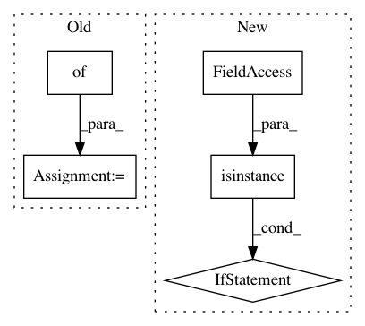

a850be48e6de9afdb04a0dab0c7facda871f623d,src/sdk/pynni/nni/hyperopt_tuner/hyperopt_tuner.py,,_split_index,#Any#,164
Before Change
Delete index infromation from params
result = {}
for key in params:
if isinstance(params[key], dict):
value = params[key][VALUE]
else:
After Change
Delete index infromation from params
if isinstance(params, list):
return [params[0], _split_index(params[1])]
elif isinstance(params, dict):
if INDEX in params.keys():
return _split_index(params[VALUE])
result = dict()
for key in params:
result[key] = _split_index(params[key])
return result
else:
return params
class HyperoptTuner(Tuner):
HyperoptTuner is a tuner which using hyperopt algorithm.
In pattern: SUPERPATTERN
Frequency: 4
Non-data size: 5
Instances
Project Name: microsoft/nni
Commit Name: a850be48e6de9afdb04a0dab0c7facda871f623d
Time: 2019-04-28
Author: purityfan@163.com
File Name: src/sdk/pynni/nni/hyperopt_tuner/hyperopt_tuner.py
Class Name:
Method Name: _split_index
Project Name: ray-project/ray
Commit Name: 91535e910201dc403cb2b8644a75e1132bd712fe
Time: 2020-09-03
Author: krfricke@users.noreply.github.com
File Name: python/ray/tune/integration/keras.py
Class Name: TuneReporterCallback
Method Name: __init__
Project Name: hanxiao/bert-as-service
Commit Name: 0616f0a6d33e88b566b846e8a175c1a2c844cdc7
Time: 2018-11-26
Author: hanhxiao@tencent.com
File Name: service/server.py
Class Name: BertServer
Method Name: __init__
Project Name: keras-team/keras
Commit Name: 173a1a545954bae38e40f4fb0bde228765a9b059
Time: 2018-02-17
Author: mats@plysjbyen.net
File Name: keras/preprocessing/text.py
Class Name: Tokenizer
Method Name: fit_on_texts